The mod utilities are a collection of functions that have been added to FO3Edit over the years for both Oblivion and Fallout3 that can aid mod authors in several areas. The next sections review these functions and describe how to utilize them.
7. Mod Utilities
7.1 Overview
7.2 Building Reference Information
Building reference information is a common task that is often performed behind the scenes by FO3Edit, and essentially finds all instances of a “Thing” in the game. Be it a script, NPC or a toilet, the build reference info function will show you all of them across the mod files loaded into FO3Edit. In this section we feature Xodarap’s Fallout Overhaul (XFO) mod, which is known as one of the bigger, stable mods that changes that make your gaming experience much more challenging and immersive (I use this myself, so I had to feature Xodaraps fine work!)

For our example of building reference information, there are a couple of choices to consider; If you are trying to find All instances of that Thing, then load all of the mod files when loading FO3Edit. If however you are looking for instances of a Thing in a single mod-file, then you’ll only want to load that mod-file as shown in the screenshot below:
Here we start the action by Right-clicking in the open white-space of the Master/Plugin Selection window (A) which presents a small context menu. From this menu choose, “Select None” (B) to clear all check marks. Then you can select just the XFO mod we want to load (C) and click, “OK” to bring it up into FO3Edit.

Once FO3Edit is loaded, you will be presented with a screenshot similar to that below. There you can see the three mods loaded, the XFO stand-alone version and its two masters. To build reference information, Right-click on the XFO entry in the Left-side Panel (A) which will present the main context menu. Select, “Build Reference Info” (B) from this menu as shown below:

This will present you with a new window for, “Building reference information”, where you can select the master files or other mod files that you want to build reference information for (A). If you are looking through all mod files, make sure that you select everything (you can also use the Right-click, “Select None” method to quickly check them all:
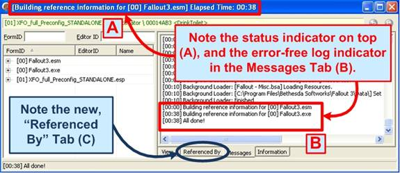
This process can take some time depending on how many mods you are building reference information for. Fortunately there is a status indicator in the top window (A) that shows you the time elapsed during parsing as shown below:
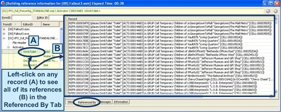
Note how there is a new Tab at the bottom the Referenced By Tab, which displays the output of our reference check. As shown above, the Messages Tab shows the overall outcome of the function, while the screenshot below shows you the Referenced By Tab and its output.
In this case we Left-clicked on the Drink Toilet record in XFO, and can see very instance of the toilet in the Referenced By Tab. Each row in the output shows you extensive information about the reference, the cell it’s placed in, the name of the location, it’s FormID, etc. You can run this function for any time in any mod that you wish!
7.3 Building Reachable Information
For our example of building reference information, there are a couple of choices to consider; If you are trying to find All instances of that Thing, then load all of the mod files when loading FO3Edit. If however you are looking for instances of a Thing in a single mod-file, then you’ll only want to load that mod-file instead of the entire list. Some important notes about the "Build Reachable Info" function:
- After you've run that function, you'll see that some records are displayed stricken-through. These records are considered to be "not reachable".
- There are some limits to this. The "not reachable" classification is only true if you:
- Start a new game with exactly the mods you've currently loaded.
- Do not use the console in any way.
- There are no FOSE scripts involved that use some dirty tricks to get hold of a reference to something without that something showing up in the SCRO's of the script.
Also the meaning of "reachable" is sometimes a bit gray. For example; For Activator's, Statics, Weapons, Armor, and so on “reachable” means that the player character should be able to get somewhere from where he can see the object and/or somehow get it into his inventory. For Quests it means that the quest either starts enabled or that there is probably some way how it can become enabled or at least that somewhere the variables belonging to the quest script get accessed. For DIAL's and INFO's it means that it's probably possible to select the topic somewhere or hear the response somewhere. For CELL's and WRLD's it means that the player character is probably somehow able to enter it.
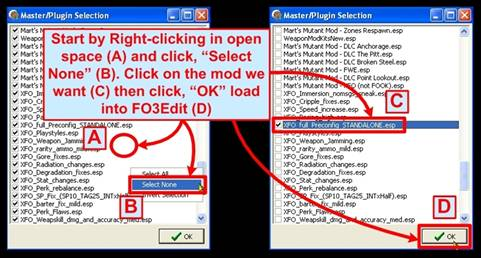
Start the action by Right-clicking in the open white-space of the Master/Plugin Selection window (A), which will present a small context menu. From this menu choose, “Select None” (B) to clear all check marks. Then you can select just the XFO mod we want to load (C) and click, “OK” to bring it up into FO3Edit as shown below:

Once loaded, Right-click on the mod to build reachable info for (A) to render the main context menu. Select, “Build reachable info” from the menu to run the function as shown below:
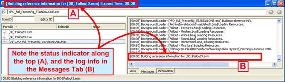
As with the Build Reference Information function, the build reach ability function may take some time to process all of the records depending on how many mods you are loading for the comparison. The status bar at the very top will give you indication of how far along the function is during parsing as shown below. The Messages Tab shows the log-file output as it happens, and overall this function can take some time to complete:
Be aware that half-way through the process, the Elapsed Time clock on top will appear to stop, and FO3Edit will appear to be frozen or locked-up. In truth the Elapsed Clock only counts through half of the Build Reachable Info function, so be patient – the process will complete within a minute or two.

Once the Build Reachable Info function is complete, you will see the, “All done!” notice in the Messages Tab (A) along with log file output. The Left-side Panel shows all of the records in the mod with Green Text, Yellow Background (B) as shown below:
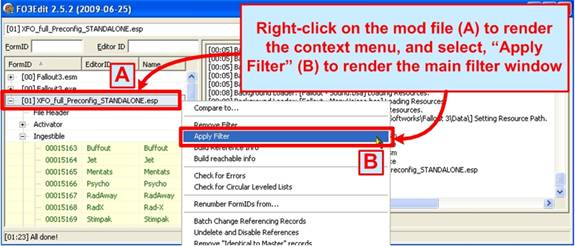
We’re not quite done yet, next we need to apply a Filter to remove all records from the view except those that are considered, “Unreachable”. To do this, Right-click on the mod in the Left-side Panel (A), and select, “Apply Filter” from the main context menu:
Once Apply Filter is selected, the main Filter window view will be presented as shown below, where you can apply the Reachable Info Filter.
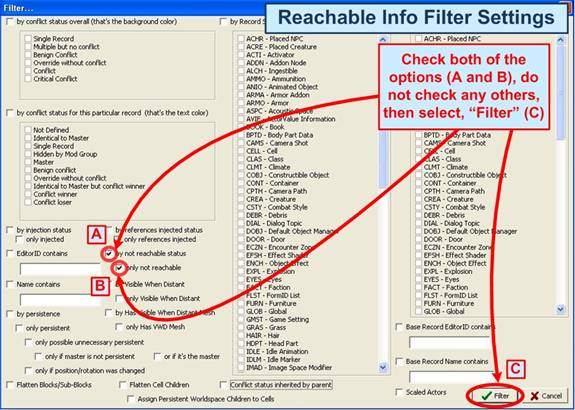
The screenshot below illustrates the Reachable Info filter settings that you will need to set; this time just two, “by not reachable status” (A) and “only not reachable” (B). Then select, “Filter” (C) to apply the new filter settings as shown below:

This filter should not take very long to process, perhaps several seconds. Below an example is shown of the Messages Tab output, indicating the result of the filter (B). You can also see the stricken-through records (A) that are not reachable by the player:

The final results of the Build Reachable Info function are shown in the screenshot below via the View Tab (A) and Left-Side Panel (C), where the stricken-through records are shown with horizontal lines through the text. These stricken-through records are those which are not considered, “Reachable” by the player-character in-game. You can click-open any of the record headings in the Left-side Panel to see the un-reachable records by category as shown in the screenshot below:
Note that in the FormLists you might see some things marked as unreachable which do technically have an effect on the player character. For example, the repair lists will show up as unreachable. The reason for that is that if the repair-list was marked as reachable, it would automatically mark all contained records as reachable. But that's not really right. Just because something can possibly be used to repair an object that the character has doesn't meant that this something can actually ever be acquired by the player. So really, for FormLists the reachable status doesn't mean much either way.
Outside of FormLists, there shouldn't be any false negatives (meaning something marked as unreachable which has an influence on the game). There can be false positives (something marked as reachable while it's not). e.g. it's possible for a CELL to be considered reachable even though the only way to get there is through a door which can only be opened with a key and the key is not reachable.
For an INFO record to be reachable even though non of the conditions attached to the responses could ever possible be true. Or the quest that the INFO belongs to will never be enabled. For any type of object could be reachable even though it's just used in a GetIsID check in some script (not in a CTDA, objects referenced from conditions never become reachable through that).
Overall, even with all these shortcomings and gray areas, if someone ends up being marked as not reachable, that's a very strong indication that the particular thing will not normally effect the game.
7.4 Changing and Adding References
One of the less-used features of FO3Edit allows you to actually insert to records (items, scripts, NPCs, etc) into a mod-file directly from FO3Edit. The GECK is of course the preferred method of adding new things to your mod, but in certain circumstances it is easier or simpler to add the thing directly to the file without the GECK. This function saw its most use just prior to the release of the GECK, when there was no tool to use for such purposes. Now with the GECK in play, there is less of a need for this capability, but it still exists in FO3Edit and is documented for cases in which you want to add references directly to the game.

In this section we feature Martigen’s Marts Mutant Mod (MMM), which is one of the very best mods created for Fallout3. The screenshot below starts the action, in which we Right-click in open space somewhere in the Master/Plugin Selection window (A), then choose, “Select None” to un-check all of the entries. Now check-off the mod you want to change (C), and click, “OK” to load it into FO3Edit (D) as shown below:
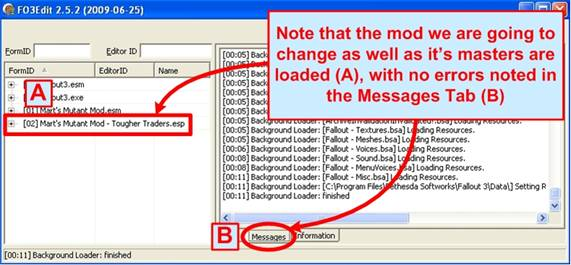
Once loaded, the screenshot below shows you the expected results. Here we see that only MMM is loaded (A), along with its Master file references. The Messages Tab shows the outcome of the load, and any errors that may persist (B) as shown below:
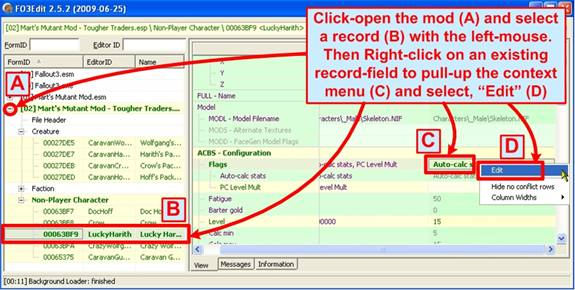
With our mod loaded and on the operating table, it’s time to start changing and added records! The first example below is of a reference change, in which we alter the Flags used on our test NPC, Lucky Harith (He is just THE man, so I had to feature him). The screenshot below illustrates the process:
We start by opening-up the Left-Side Panel record tree for MMM to the location where we want to change things (A), and choose Lucky Harith with a Left-Mouse Click (B). To edit a record, Right-click it’s entry in the View Tab (C) to render a small context menu, then select, “Edit” (D) to open the edit context menu as shown above.

The, “Edit Value” window will now be presented, allowing you to check/select any flags that you want Lucky Harith to have added to them. As we just can’t let Lucky down, we’ll give him an Essential flag so that he never dies! Check-mark the Essential flag row in the window (A) and select, “OK” to set the flagging (B) as shown:

Once OK is selected, you are taken back to the main View Tab where you can see the new flags set (A). Note that the Flagging is also now in Bold, indicating that they have been marked as changed and will thus be saved as shown below:
Also note that the reference Text (B) and the record entry (C) are also both in Bold Text, marking them as changed for saving. See how easy that was!?!

To add a new reference into a record, the process is very similar. Let’s keep with Lucky Harith, and add some Rad-X to his inventory so that he’s ready for everything! To do this, start by Left-Clicking the record you want to change (A) in the Left-Side Panel, then Right-click the row in the View Tab adjacent to the type of record you want to add. In this case we’re adding an item, so to the right of, “Items” in the View Tab is where you want to Right-click (B). A small context window will render, select, “Add” (C) as shown:
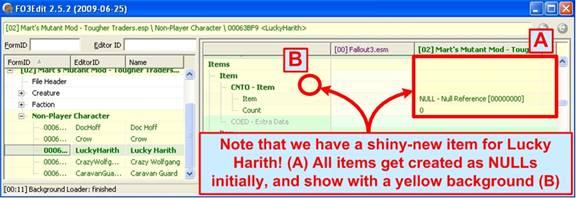
Once you click, “Add”, a new blank item entry will be added into the View Tab (A) next to the item reference (B). Also note it shows with a Yellow background (A).
Initially all new items get added as a “NULL” (RefID 00000000) which is obviously not right. Once added you will need to change (Edit) the new item to turn it into the Rad-X item that we want to give to Lucky Harith.

To transform our new NULL item into Rad-X, we first Right-click on the new item (A) and click on which renders a small context menu. Select “Edit” (B) from the menu as shown:
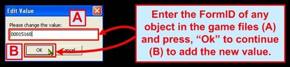
This will pull-up a small, “Edit Value” window as shown below. Here you can input the FormID of the Rad-X item, which is, “00015168”. Enter that into the value field (A) and click, “OK” to apply the value (B):

Once done, note below that our NULL item has magically turned into Rad-X! I bet Lucky Harith has never felt so safe! (B). Also note the text is in Bold, marking it for saving. You can also edit other values about the object as needed (such as count, etc) as shown:

The last thing we need to do is save our changes! You can do this via either selecting, “Alt-S” and/or close FO3Edit to render the, “Save changed files” window. Here you can select/check any mod you want to save (A), and click, “OK” to save the files (B) as shown in the screenshot below:
Note that different kinds of records will require different actions when adding new references, as scripts are different from items which are different from NPCs. You can take some time and explore the different types of additions as needed.
7.5 Marking Nodes as Modified

This function is used by mod authors to mark certain records as having been modified, which means they will be saved when you press, “Alt-S” or exit FO3Edit. This is sometimes necessary when a mod author wants to force an update of a particular records or group of records to save even though FO3Edit registers to change. The process is one-step as shown in the screenshot below:

The screenshot below shows the results, in which the record that was Marked as Modified now has Bold text (A). This record will now be saved when you exit.
7.6 Copying and Replicating Idle Animations
Copying and Replicating Idle Animations is a specialized function that was written for Martigen in support of Marts Mutant Mod (MMM). What the function does is to copy a set of NPC idle animations from a list of available animations into an NPC. In this way, the process of creating new NPCs is dramatically improved and much less prone to errors when assigning idle animations. This process describes how that function works, and is clearly geared towards the mod author.
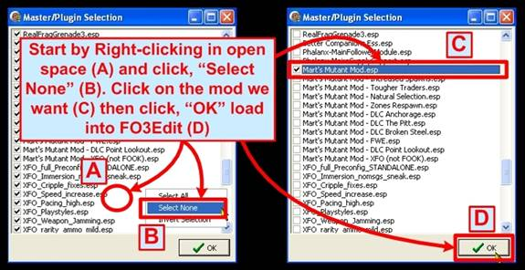
To start the action, launch FO3Edit and Right-click in open space somewhere in the window (A) to render a small context menu. Select, “Apply None” (B) from this menu to de-select everything. You can then Left-click the check box for just the mod you want to copy idle animations into (C), and then, “OK” to load it (D). As this function was written by Elminster for Martigen, we of course will feature MMM in this section as shown below:

Once loaded FO3Edit presents the typical output as shown below, in which MMM and its master file references are the only record-trees shown in the Left-Side Panel (A):
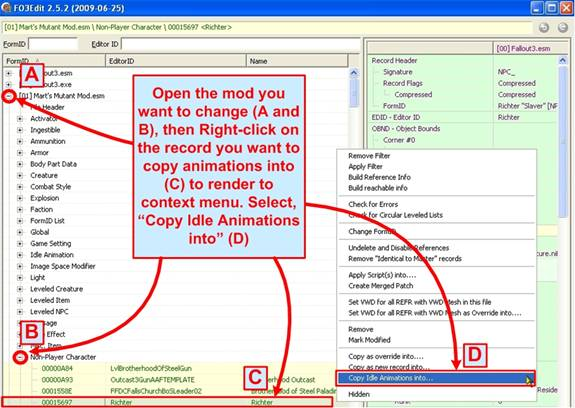
Next we’ll want top open MMM up in the Left-Side Panel by Left-clicking on the record tree (A and B). This will expose the interior of the MMM plug-in, and allow you to select the NPC that you want to copy Idle Animations into (C). Right-click on this NPC (C) to render the main context menu, then select, “Copy Idle Animations into…” as shown:
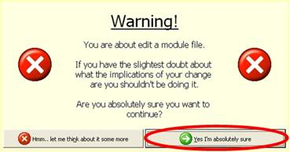
You will be presented with the classic FO3Edit warning window, harkening doom upon the universe should you dare attempt to tamper with this mod file! Indeed, you should not change other people’s mod files as a general rule. We are only changing MMM for the purposes of this tutorial; just don’t save it when you’re done eh?
If you dare, select, “Yes I’m absolutely sure” to continue.

Next you will be presented with the, “Which Idles do you want to copy?” window, which offers the master selection of available idle animations that you can choose from. Do not ask me how to create these idle animations, as I do not know. You can ask Martigen in the forums about this, but I recommend strong doses of Rad-X first or he may simply morph you into a night-ghoul for daring to bother him. Otherwise, take the wise choice and select one of the available groups of idle animations to copy (A) and the click, “OK” to load them into the buffer (B) as shown below:

You will now be presented with a series of small Edit Box windows, which are used to customize the naming of these idle animations and thus prevent duplicates. The first window asks for a new Model Prefix (A) – which allows you to specify a new model-name for these animations as shown below:

The next EditorID window allows you to Remove a portion of the current idle animations name in the new versions your creating (A). This is Optional, click “OK” either way.

The next EditorID Prefix window allows you to add a new unique name to the Beginning of each animation name (A). This you should use, pick something unique to your mod:

The last EditorID Suffix window allows you to add something to the End of each animation name (A), which again is Optional. Click, “OK” either way to finish:

Finally we reach the last step, in which a window is presented with the available loaded mod-files that you can copy these idle animations into. For the purposes of this demo we chose MMM’s Master file (A), as shown in the screenshot below:

Selecting, “OK” (B) will execute the paste command and place the new idle animations into the mod file you specified. The screenshot below illustrates a typical result, in which both the File Header and Idle Animation record headings show with Bold text (indicating that they have changed and are thus marked as modified for saving):
Opening the Idle Animation record tree in the Left-Side Panel (B) will reveal the newly-copied animations as shown below.
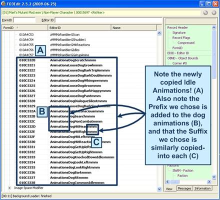
The output screenshots below illustrate both the Left-Side Panel results (below) and the View Tab output for each new animation (bottom). Note how each animation that was copied now carries the new Prefix, “Animations” (B) as well as the new Suffix, “mmm” (C) that we chose in the four EditorID windows.

Note below the details about each idle animation as shown in the View Tab (B). Each animation includes many variables and details that would be time consuming and error-prone to do by hand. This Copy Idle Animations function automates the process.

The final step is to save our hard work! Either pressing, “Alt-S” or closing the FO3Edit program with present you with the Save changed files window as shown below. Simply ensure that the mod you worked on is checked (A), and press, “OK” to Save. (Don’t try this at home kids!):
Note again that you should not be changing MMM or any other mod that you did not create. This function is purely for mod authors in creating their own mods which require many new NPCs, for which this function can automation part of the work.
7.7 Applying Scripts Into
Download this: http://fallout3nexus.com/downloads/file.php?id=1904
It makes use of this function. If you have still questions about it afterward feel free to ask again.
NEED MORE INFO!
7.8 Deprecated Functions
There are three options in the main context menu that were built for Oblivion and were carried-forward into the Fallout3 version of FO3Edit. These functions may still work for Oblivion, but they do not work for Fallout3 and are considered Deprecated functions which should not be used for any reason. You may even crash FO3Edit by trying to run them. These functions that are deprecated for Fallout3 are:
- Object LOD
- Set VWD for all REFR with VWD Mesh in this file
- Set VWD for all REFR with VWD Mesh copy as override…